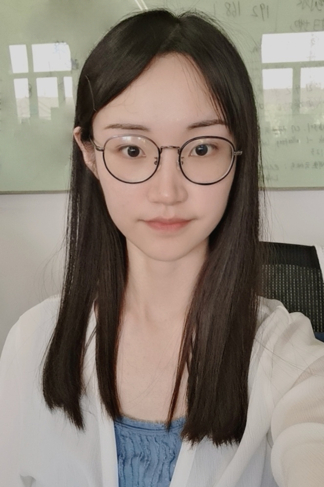

|  | PhD student, |
I am a Ph.D. student at East China Normal University, Shanghai, China, and supervised by Prof. Geguang Pu and Prof. Ting Su.
My research interest include
Software Testing
Yiheng Xiong, Mengqian Xu, Ting Su, Jingling Sun, Jue Wang, He Wen, Geguang Pu, Jifeng He, Zhendong Su, "An Empirical Study of Functional Bugs in Android Apps", In ISSTA 2023.
Jingling Sun, Ting Su, Kai Liu, Chao Peng, Zhao Zhang, Geguang Pu, Tao Xie, Zhendong Su, "Characterizing and Finding System Setting-Related Defects in Android Apps", In TSE.
Jingling Sun, "SetDroid: Detecting User-configurable Setting Issues of Android Apps via Metamorphic Fuzzing", In student research competition@ICSE 2021.
Jingling Sun, Ting Su, Junxin Li, Zhen Dong, Geguang Pu, Tao Xie, Zhendong Su, "Understanding and Finding System Setting-Related Defects in Android Apps", In ISSTA 2021.
Ting Su, Yichen Yan, Jue Wang, Jingling Sun, Yiheng Xiong, Geguang Pu, Ke Wang, Zhendong Su, "Fully Automated Functional Fuzzing of Android Apps for Detecting Non-Crashing Logic Bugs", In SPLASH/OOPSLA 2021.
I got the second place of student research competition@ICSE 2021.